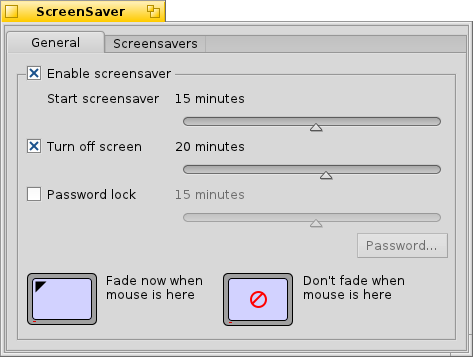

Polski
Polski Bahasa Indonesia
Bahasa Indonesia Català
Català Deutsch
Deutsch English
English Español
Español Français
Français Furlan
Furlan Italiano
Italiano Magyar
Magyar Português
Português Português (Brazil)
Português (Brazil) Română
Română Slovenčina
Slovenčina Suomi
Suomi Svenska
Svenska Türkçe
Türkçe 中文 ［中文］
中文 ［中文］ Русский
Русский Українська
Українська 日本語
日本語 ScreenSaver
ScreenSaver
| Deskbar: | ||
| Ścieżka: | /boot/system/preferences/Screensaver | |
| Ustawienia: | ~/config/settings/ScreenSaver_settings |
Panel preferencji ScreenSaver jest podzielony na dwie zakładki:
 Ogólne
Ogólne

Górne pole wyboru włącza/wyłącza wygaszacz ekranu.
Suwakiem pod spodem można ustawić czas po jakim wygaszacz zostanie włączony.
Kolejne dwa suwaki są dostępne tylko jeśli odpowiadające im pola wyboru są zaznaczone:
Pierwszy z nich ustawia czas po jakim ekran zostanie wyłaczony.
Drugi – po ilu minutach będzie wymagane hasło do odblokowania.
Klikając na rogi dwóch ekranów na dole, można ustawić natychmiastowe uruchomienie wygaszacza lub tymczasowe jego wyłączenie przez przesunięcie wskaźnika myszy w wybrany róg. Kliknięcie na środku ekranów wyłącza te funkcjonalności.
Wygaszacze ekranu

Druga zakładka zawiera listę wszystkich zainstalowanych wygaszaczy oraz ich ustawienia. Możesz je przetestować przyciskiem .
Nowe wygaszacze niebędące częścią pakietu .hpkg można zainstalować kopiując je do odpowiedniego katalogu w hierarchii non-packaged (zobacz temat Układ systemu plików):
| /boot/system/non-packaged/add-ons/Screen Savers/ | dla wygaszaczy dostępnych dla wszystkich użytkowników. | |
| /boot/home/config/non-packaged/add-ons/Screen Savers/ | dla wygaszaczy dostępnych tylko dla siebie. |